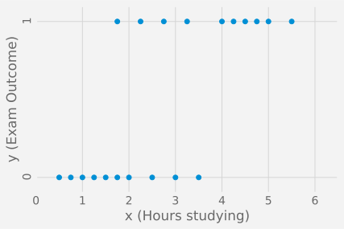
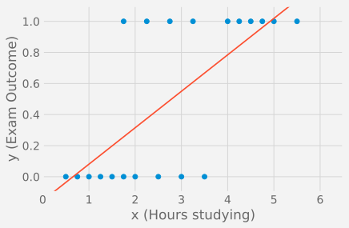
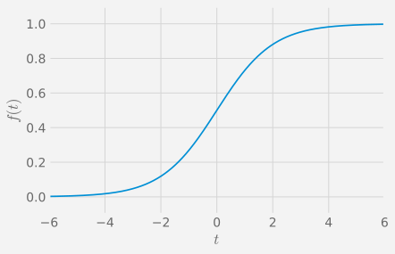
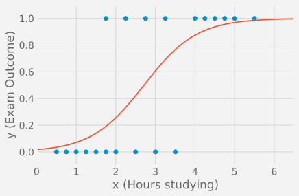
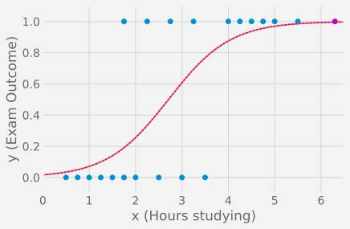
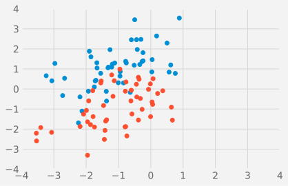
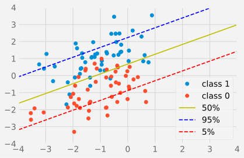

Chapter 2 Logistic Regression
With Linear Regression, we looked at linear models, where the output of the problem was a continuous variable (eg. height, car price, temperature, ).
Very often you need to design a classifier that can answer questions such as: what car type is it? is the person smiling? is a solar flare going to happen? In such problems the model depends on categorical variables.
Logistic Regression (Cox 1958), considers the case of a binary variable. That is, the outcome is 0/1 or true/false.
There is a whole zoo of classifiers out there. Why are we covering logistic regression in particular?
Because logistic regression is the building block of Neural Nets.
2.1 Introductory Example
We’ll start with an example from Wikipedia:
A group of 20 students spend between 0 and 6 hours studying for an exam. How does the number of hours spent studying affect the probability that the student will pass the exam?
The collected data looks like so:
Studying Hours : 0.75 1.00 2.75 3.50 ...
result (1=pass,0=fail) : 0 0 1 0 ...
2.2 Linear Approximation
Although the output \(y\) is binary, we could still attempt to fit a linear model via least squares:
\[ h_{{\bf w}}({\bf x}) = {\bf x}^{\top}{\bf w} \]
In our case, we will simply expand our features to \({\bf x}^{\top} = [1, x]\) and \({\bf w}^{\top} = [w_0, w_1]\) and therefore \(h_{{\bf w}}({\bf x})=w_0 + w_1 x\). This is what the least squares estimate \(h_{{\bf w}}({\bf x})\) looks like:

The model prediction \(h_{\bf w}({\bf x}) = {\bf x}^{\top}{\bf w}\) is continuous, but we could apply a threshold to obtain the binary classifier as follows:
\[ y = [ {\bf x}^{\top}{\bf w} > 0.5 ] = \begin{cases} 0 & \text{ if ${\bf x}^{\top}{\bf w} \leq 0.5$} \\ 1 & \text{ if ${\bf x}^{\top}{\bf w} > 0.5$} \end{cases} \] and the output would be 0 or 1.
The problem of course is that for clear cut cases (eg. a student studying a large number of hours), the LS prediction error \((y-h_{{\bf w}}({\bf x}))^2\) becomes also very large, when in fact the prediction is perfectly fine. Below, we have added to the training set a student that has studied for 6.2 hours and successfully passed his exam. This shouldn’t change the model but the new LS estimate (magenta) has to shift to also minimise the large error for this new entry, even so there is no real error.
Figure 2.1: Example of a binary class problem.
Obviously the problem is that we have optimised \({\bf w}\) so that \({\bf x}^{\top}{\bf w}\) matches \({y}\) and not so that \([ {\bf x}^{\top}{\bf w} > 0.5 ]\) matches \(y\).
Let’s see how this can be done.
2.3 General Linear Model
The problem of general linear models can be presented as follows. We are trying to find a linear combination of the data \({\bf x}^{\top}{\bf w}\), such that the sign of \({\bf x}^{\top}{\bf w}\) tells us about the outcome \(y\):
\[ y = [ {\bf x}^{\top}{\bf w} + \epsilon > 0 ] \]
The quantity \({\bf x}^{\top}{\bf w}\) is sometimes called the risk score. It is a scalar value. The larger the value of \({\bf x}^{\top}{\bf w}\) is, the more certain we are that \(y=1\).
The key is to represent the error term as a random variable \(\epsilon\). Multiple choices are possible for the distribution of \(\epsilon\). In logistic regression, the error \(\epsilon\) is assumed to follow a logistic distribution and the risk score \({\bf x}^{\top} {\bf y}\) is also called the logit.
Figure 2.2: probability density function of the logistic distribution
In probit regression, the error \(\epsilon\) is assumed to follow a normal distribution, the risk score \({\bf x}^{\top} {\bf w}\) is also called the probit.

Figure 2.3: probability density function of the normal distribution
For our purposes, there is not much difference between logistic and logit regression. The main difference is that logistic regression is numerically easier to solve.
2.4 Logistic Model
From now on, we’ll only look at the logistic model. Note that similar derivations could be made for any other model.
Consider \(p(y=1|{\bf x})\), the likelihood that the output is a success:
\[ \begin{aligned} p(y=1 | {\bf x}) &= p( {\bf x}^{\top}{\bf w} + \epsilon > 0 )\\ &= p(\epsilon > - {\bf x}^{\top}{\bf w}) \end{aligned} \]
since \(\epsilon\) is symmetrically distributed around 0, it follows that
\[ \begin{aligned} p(y=1 | {\bf x}) &= p( \epsilon < {\bf x}^{\top}{\bf w}) \end{aligned} \]
Because we have made some assumptions about the distribution of \(\epsilon\), we are able to derive a closed-form expression for the likelihood.
The function \(f: t \mapsto f(t) = p( \epsilon < t)\) is the c.d.f. of the logistic distribution and is also called the logistic function or sigmoid:
\[ f(t) = \frac{1}{1 + e^{-t}} \]

Thus we have a simple model for the likelihood of success \(h_{\bf w}({\bf x})=p(y=1 | {\bf x})\):
\[ h_{\bf w}({\bf x}) = p(y=1 | {\bf x}) = p( \epsilon < {\bf x}^{\top}{\bf w}) = f({\bf x}^{\top}{\bf w}) = \frac{1}{1 + e^{-{\bf x}^{\top}{\bf w}}} \]
The likelihood of failure is simply given by:
\[ p(y=0 | {\bf x}) = 1-h_{\bf w}({\bf x}) \]
In linear regression, the model \(h_{\bf w}({\bf x})\) was a direct prediction of the outcome:
\[ h_{\bf w}({\bf x}) = y \]
In logistic regression, the model \(h_{\bf w}({\bf x})\) makes an estimation of the likelihood of the outcome:
\[ h_{\bf w}({\bf x}) = p(y=1|{\bf x}) \]
Thus whereas in linear regression we try to answer the question:
What is the expected value of \(y\) given \({\bf x}\)?
In logistic regression (and any other general linear model), we, instead, try to answer the question:
What is the probability that \(y=1\) given \({\bf x}\)?
Below is the plot of an estimated \(h_{\bf w}({\bf x}) \approx p(y=1|{\bf x})\) for our problem:

The results are easy to interpret: there is about 60% chance to pass the exam if you study for 3 hours.
Interestingly, if we introduce the student that studies for 6.2 hours and is successful to our trainig set, the new logistic regression estimate is almost identical to our previous estimate (both magenta and red curves actually coincide).

2.5 Maximum Likelihood
To estimate the weights \({\bf w}\), we will again use the concept of Maximum Likelihood.
As we’ve just seen, for a particular observation \({\bf x}_i\), the likelihood is given by:
\[ p(y=y_i|{\bf x}_i ) = \begin{cases} p(y=1|{\bf x}_i) = h_{\bf w}({\bf x}_i) & \text{ if $y_i=1$} \\ p(y=0|{\bf x}_i) = 1 - h_{\bf w}({\bf x}_i) & \text{ if $y_i=0$} \end{cases} \] As \(y_i \in \{0,1\}\), this can be rewritten in a slightly more compact form as: \[ p(y=y_i|{\bf x}_i ) = h_{\bf w}({\bf x}_i)^{y_i} (1-h_{\bf w}({\bf x}_i))^{1 - y_i} \]
This works because \(z^0=1\).
The likelihood over all observations is then:
\[ p({\bf y} |{\bf X}) = \prod_{i=1}^n h_{\bf w}\left({\bf x}_i)^{y_i} (1-h_{\bf w}({\bf x}_i)\right)^{1 - y_i} \]
We want to find \({\bf w}\) that maximises the likelihood \(p({\bf y}|{\bf X})\). As always, it is equivalent but more convenient to minimise the negative log likelihood:
\[\begin{eqnarray*} E({\bf w}) &=& -\mathrm{ln}(p({\bf y}|{\bf X})) \\ &=& \sum_{i=1}^n - y_i\ \mathrm{ln} \left( h_{\bf w}({\bf x}_i) \right) - (1 - y_i)\ \mathrm{ln} \left( 1 - h_{\bf w}({\bf x}_i) \right) \end{eqnarray*}\]
This error function we need to minimise is called the cross-entropy.
In the Machine Learning community, the error function is also frequently called a loss function. Thus here we would say: the loss function is the cross-entropy.
We could have considered optimising the parameters \({\bf w}\) using other loss functions. For instance we could have tried to minimise the least square error as we did in linear regression:
\[ E_{LS}({\bf w}) = \sum_{i=1}^n \left( h_{\bf w}({\bf x}_i) - y_i\right)^2 \]
The solution would not maximise the likelihood, as would the cross-entropy loss, but maybe that would still be reasonable thing to do? The problem is that \(h_{\bf w}\) is non-convex and makes the minimisation of \(E_{LS}({\bf w})\) much harder than when using cross-entropy.
This is in fact a mistake that the Neural Net community did for a number of years before switching to the cross entropy loss function.
2.6 Optimisation: gradient descent
Unfortunately there is no closed form solution to Logistic Regression. To minimise the error function \(E({\bf w})\), we need to resort to an iterative optimisation strategy: the gradient descent optimisation. This is a general method for nonlinear optimisation which will be at the core of neural networks optimisation.
We start at \({\bf w}^{(0)}\) and take steps along a direction \({\bf v}\) using a fixed size step as follows:
\[ {\bf w}^{(n+1)} = {\bf w}^{(n)} + \eta {\bf v}^{(n)} \]
The idea is to find the direction \({\bf v}\) that gives the steepest decrease of \(E({\bf w})\).
The hyper-parameter \(\eta\) is called the learning rate and controls the speed of the descent.
What is the steepest slope \({\bf v}\)?
Without loss of generality, we can set \({\bf v}\) to be a unit vector (ie. \(\|{\bf v}\|=1\)). Then, moving \({\bf w}\) to \({\bf w} + \eta {\bf v}\) yields a new error as follows:
\[ E\left({\bf w} + \eta {\bf v}\right) = E\left({\bf w} \right) + \eta \left( \frac{\partial E}{\partial {\bf w}}\right)^{\top} {\bf v} + O(\eta^2) \]
which reaches a minimum when
\[ {\bf v} = - \frac{ \frac{\partial E}{\partial {\bf w}} }{ \| \frac{\partial E}{\partial {\bf w}} \|} \]
Setting the right size for a fixed learning rate \(\eta\) is difficult, thus, instead of using
\[ {\bf w}^{(n+1)} = {\bf w}^{(n)} - \eta \frac{ \frac{\partial E}{\partial {\bf w}} }{ \| \frac{\partial E}{\partial {\bf w}} \|} \]
we usually discard the normalisation by \(\| \frac{\partial E}{\partial {\bf w}} \|\) and adopt an adaptive step. The gradient descent algorithm then consists in iterating the following step:
\[ {\bf w}^{(n+1)} = {\bf w}^{(n)} - \eta \frac{\partial E}{\partial {\bf w}} \]
Let’s see what it looks like in our case. Recall that the cross-entropy error function to minimise is:
\[ E =\sum_{i=1}^{n} -y_i \ \mathrm{ln} (h_{\bf w}({\bf x}_i)) - (1-y_i)\ \mathrm{ln} (1 - h_{\bf w}({\bf x}_i)) \]
\[ \text{and that} \quad h_{\bf w}({\bf x}) = f({\bf x}^{\top}{\bf w}) = \frac{1}{1 + e^{-{\bf x}^{\top}{\bf w}}} \]
The overall gradient descent method looks like so for Logistic Regression:
set an initial weight vector \({\bf w}^{(0)}\) and
for \(t=0,1, 2, \cdots\) do until convergence
compute the gradient \[ \frac{\partial E}{\partial {\bf w}} = \sum_{i=1}^{n} \left(\frac{1}{1 + e^{-{\bf x}_i^{\top}{\bf w}}} - y_i \right) {\bf x}_i \]
update the weights: \({\bf w}^{(t+1)} = {\bf w}^{(t)} - \eta \frac{\partial E}{\partial {\bf w}}\)
2.7 Example
Below is an example with 2 features.

The estimate for the probability of success is
\[ h_{\bf w}({\bf x}) = 1/(1 + e^{ - (-1.28 - 1.09 x_1 + 1.89 x_2)} ) \]
Below are drawn the lines that correspond to \(h_{\bf w}({\bf x})=0.05\), \(h_{\bf w}({\bf x})=0.5\) and \(h_{\bf w}({\bf x})=0.95\).

2.8 Multiclass Classification
It is very often that you have to deal with more than 2 classes.
The simplest way to consider a problem that has more than 2 classes would be to adopt the one-vs-all (or one-against-all) strategy:
For each class \(k\), you can train a single binary classifier (\(y=0\) for all other class, and \(y=1\) for class \(k\)). The classifiers return a real-valued likelihood for their decision.
The one-vs-all prediction returns the label for which the corresponding classifier reports the highest likelihood.
The one-vs-all approach is a very simple one. However it is an heuristic that has many problems.
One problem is that for each binary classifier, the negative samples (from all the classes but \(k\)) are more numerous and more heterogeneous than the positive samples (from class \(k\)).
A better approach is thus to have a unified model for all classifiers and jointly train them. The extension of Logistic regression that just does this is called multinomial logistic regression.
2.9 Multinomial Logistic Regression
In Multinomial Logistic Regression, each of the binary classifier is based on the following likelihood model:
\[ p(y=C_k| {\bf x} ) = \mathrm{softmax}( {\bf x}^{\top}{\bf w} )_k = \frac{\mathrm{exp}({\bf w}_k^{\top} {\bf x})}{\sum_{j=1}^{K} \mathrm{exp}({\bf w}_j^{\top} {\bf x})} \]
\(C_k\) is the class \(k\) and \(\mathrm{softmax}: \mathbb{R}^K \rightarrow \mathbb{R}^K\) is the function defined as
\[ \mathrm{softmax}({\bf t})_k = \frac{\mathrm{exp}(t_k)}{\sum_{j=1}^{K} \mathrm{exp}(t_j)} \]
In other words, \(\mathrm{softmax}\) takes as an input the vector of logits for all classes and returns the vector of corresponding likelihoods.
2.10 Softmax Optimisation
To optimise for the parameters. We can take again the maximum likelihood approach.
Combining the likelihood for all possible classes gives us:
\[ p(y|{\bf x}) = p(y=C_1| {\bf x} )^{[y=C_1]} \times \cdots \times p(y=C_K| {\bf x} )^{[y=C_K]} \]
where again \([y=C_1]\) is 1 if \(y=C_1\) and 0 otherwise.
The total likelihood is:
\[ p(y|{\bf X}) = \prod_{i=1}^{n} p(y_i=C_1| {\bf x}_i )^{[y=C_1]} \times \cdots \times p(y_i=C_K| {\bf x}_i )^{[y=C_K]} \]
Taking the negative log likelihood yields the cross entropy error function for the multiclass problem:
\[ E({\bf w}_1, \cdots, {\bf w}_K) = -\mathrm{ln}(p(y|{\bf X})) = - \sum_{i=1}^{n} \sum_{k=1}^K [y_i=C_k]\ \mathrm{ln}(p(y_i=C_k| {\bf x}_i )) \]
Similarly to logistic regression, we can use a gradient descent approach to find the \(K\) weight vectors \({\bf w}_1, \cdots, {\bf w}_K\) that minimise this cross entropy expression.
Note that the definition of the cross entropy here is just an extension of the cross entropy defined earlier. In most Deep Learning frameworks, they will be referred to as binary cross entropy and categorical cross entropy. Binary cross entropy can be seen as a special case of categorical cross entropy as the equation for binary cross entropy is the exact equation for categorical cross entropy loss when using two classes.
2.11 Take Away
With Logistic Regression, we look at linear models, where the output of the problem is a binary categorical response.
Instead of directly predicting the actual outcome as in least squares, the model proposed in logistic regression makes a prediction about the likelihood of belonging to a particular class.
Finding the maximum likelihood parameters is equivalent to minimising the cross entropy loss function. The minimisation can be done using the gradient descent technique.
The extension of Logistic Regression to more than 2 classes is called the Multinomial Logistic Regression.